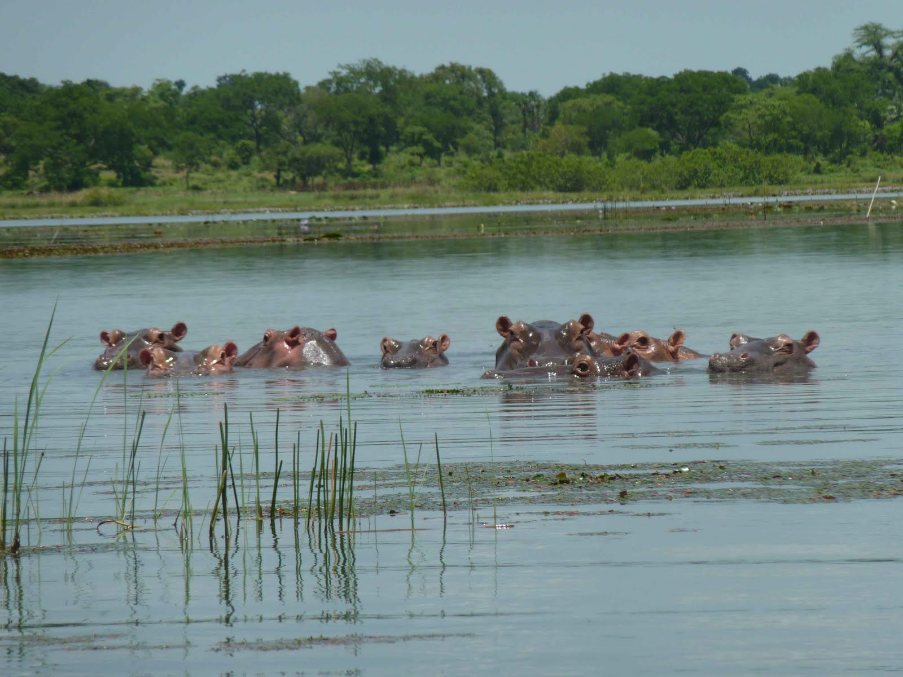

LE LAC DE TENGRELA
Bienvenu à la decouverte du Lac de TENGRELA
Tengréla est une commune rurale située dans le département de Banfora de la province de Comoé dans la région des Cascades au Burkina Faso. Le village est principalement connu en raison de sa proximité avec le lac de Tengréla.
>Situation Géographique
Tengréla se trouve à 5 km à l'Ouest du centre de Banfora. La commune est traversée par la route régionale 28 et se trouve sur la rive droite du fleuve Comoé et à l'est du lac de Tingréla – protégé par la convention de Ramsar depuis le 7 octobre 2009 – auquel elle a donné son nom.
>Histoire
Cette section est vide, insuffisamment détaillée ou incomplète. Votre aide est la bienvenue !
En 2016, le village de Tengréla, et en particulier la famille Yenepa – une famille de l'ethnie karaboro (rattachée aux sénoufos) de pêcheurs devenus des riziculteurs, a été le sujet d'un documentaire de Victorien Vialar pour Arte.
>Démographie
Évolution démographique
2003 2006 2012
3 9084 3 7271 -
En 2006, sur les 3 727 habitants du village – regroupés en 565 ménages – 53,05 % étaient des femmes, près 48 % avaient moins de 14 ans, 49 % entre 15 et 64 ans et environ 3 % plus de 65 ans. Une partie de la population, d'origine sénoufo, vient historiquement du Mali.
>Économie
L'économie de la commune est basée sur la pêche dans le lac de Tengréla, l'agriculture vivrière de subsistance, l'élevage et surtout sur la riziculture pluviale. Celle-ci, initialement traditionnelle grâce aux débordements du lac en saison des pluies, est devenue plus productive avec les techniques d'irrigation régulée et l'usage d'engrais chimiques introduits par les Chinois dans les années 2010.
>Un hippopotame dans le lac de Tengréla
En raison de la proximité du lac de Tingréla et de celle de Banfora, une petite économie du secteur du tourisme, principalement interne au pays, s'est développée depuis les années 2000 au campement Kegnigohi qui propose des hébergements et de la location de véhicules. Ce tourisme a été rendu possible en partie par le classement du lac en Site Ramsar en 2009, en raison de son écosystème riche (flore, faune lacustre – crocodile et hippopotame – et faune aviaire).
>Education et santé
Tengréla accueille un centre de santé et de protection sociale (CSPS) tandis que le Centre Hospitalier Régional (CHR) se trouve à Banfora.
La commune possède une école primaire. L'enseignement secondaire se fait uniquement à Banfora : au Collège d'Enseignement Général (CEG) et surtout au grand collège privé Sainte-Thérèse tandis que les lycées sont le lycée municipal Jacques-Toulat de Banfora, le lycée provincial Lompolo-Koné, etc.